RM2027 校内赛 · 接线图示
依据：RoboMaster 开发板 C 型用户手册（P.5 接口总览、P.10 USB、P.11 SWD、P.12–13 UART、P.14 CAN/PWM 线序与原理图、P.16 DBUS）、C620 使用说明（P.23 接口及线序、P.25–26 接线）、C610 使用说明（P.4–5 电调接口）、电池架使用说明（P.10/13）。
本页所有图都是从原版 PDF 直接渲染的，不是重画。
0. 先看这一张（整车接线总览）
1. 今晚卡住的地方：C 板 24PIN 排针的行列
手册 P.14 的 PWM 原理图给出了关键信息，这是整页最有价值的一张：
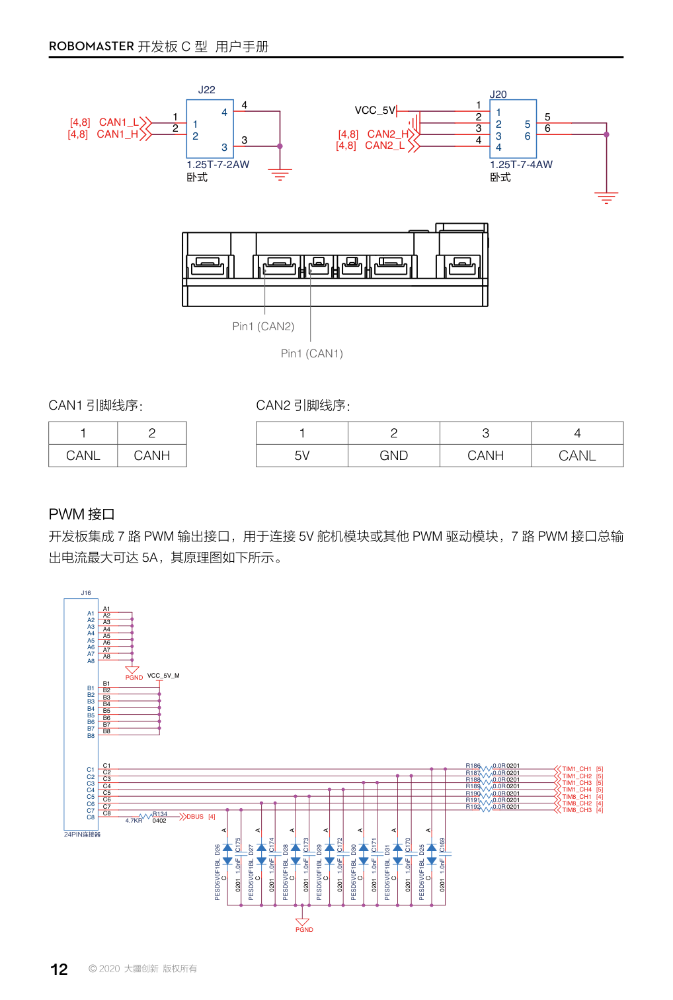
手册 P.14：上方是 CAN1（2 针，1=CANL 2=CANH） 与 CAN2（4 针，1=5V 2=GND 3=CANH 4=CANL）；下方是 PWM 的 24PIN 连接器 J16 原理图。
从原理图能直接读出来的三行：
· A1 ~ A8 全部连到 PGND（地）
· B1 ~ B8 全部连到 VCC_5V_M（5V） —— 就是这个电压供给 DBUS/舵机
· C1 ~ C7 是 7 路 PWM 信号，C8 是 DBUS 信号（经 R134 4.7K 接到反相电路 → USART3）
所以 3 针插头必须“竖着”跨 A-B-C 三排
这解释了今晚的所有现象：接收机灯不亮（没 5V）、sL/sR/col 恒 0（没信号）。
因为 24V 已经正常（vbat=26、拔掉 USB 灯还在跑），所以问题几乎肯定在这个插头的方向/接触，而不是板子。
另外两个要一并核对的东西
| 检查 | 正确做法 | 错了会怎样 |
|---|
| 排针间距 | C 板是 1.25 mm（Molex PicoBlade，手册型号 1.25T-7-4AW）；对插的插头必须也是 1.25 mm | 用 2.54 mm 舵机头硬插：看着进去了，实际中间那根针（5V）没接触 |
| C 板 24V 口 | 插 24V IN | 插成 24V OUT：输入保护电路不工作，5V 那一路可能起不来 |
2. C 板接口总览（手册 P.5）
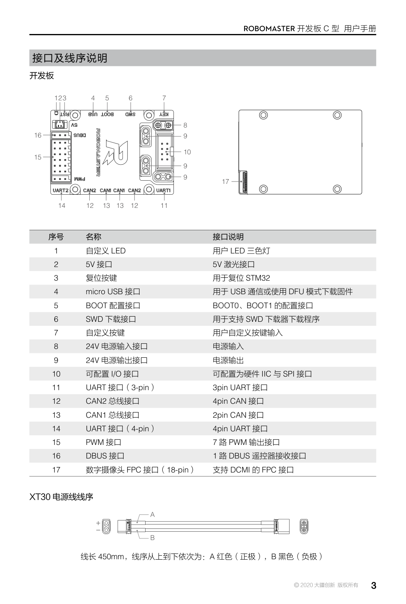
手册 P.5：整板接口编号与名称（24V 输入/输出、CAN1/CAN2、UART、PWM、DBUS、SWD、micro USB…）。
3. 各个口的具体线序
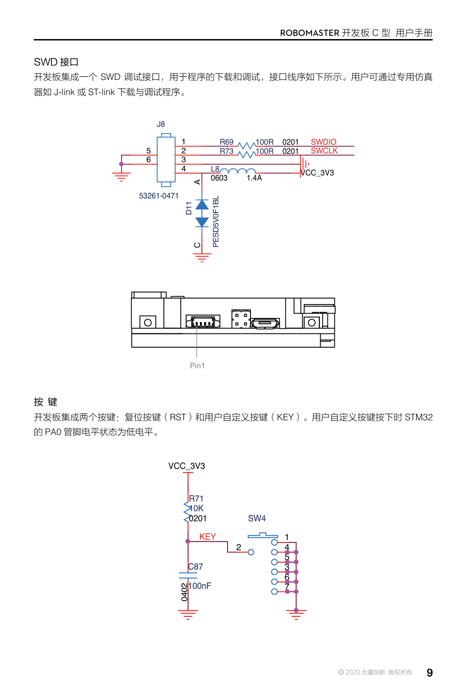
SWD（烧录）：4 针，接 ST-Link 的 SWDIO / SWCLK / GND / 3.3V。绝不接 5V。
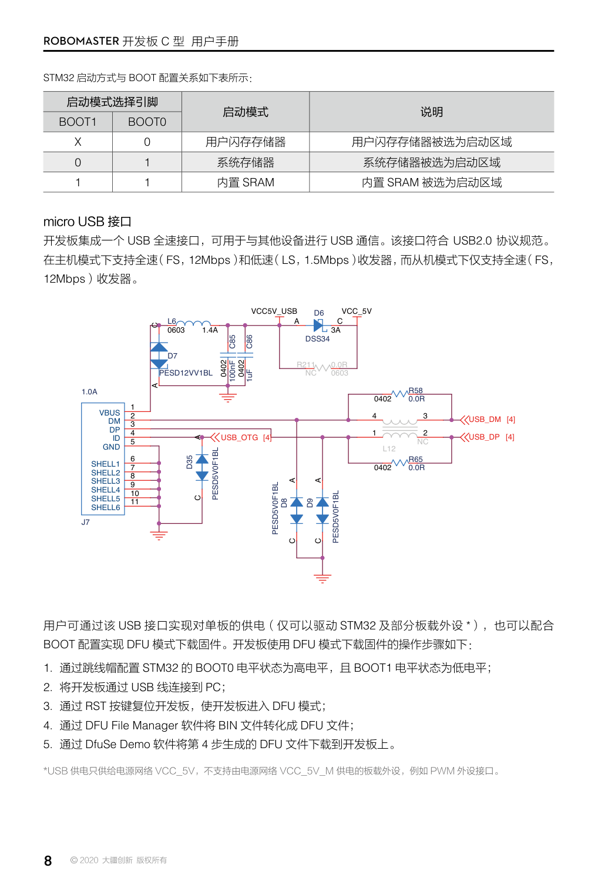
micro USB：接电脑看打印（COM 口，115200）。注意是 micro，不是 Type-C。
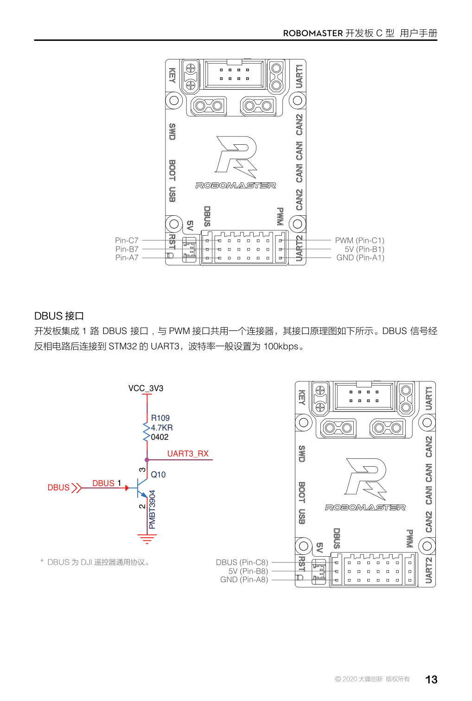
PWM 接口：7 路，总输出 5A（同一个 VCC_5V_M）。
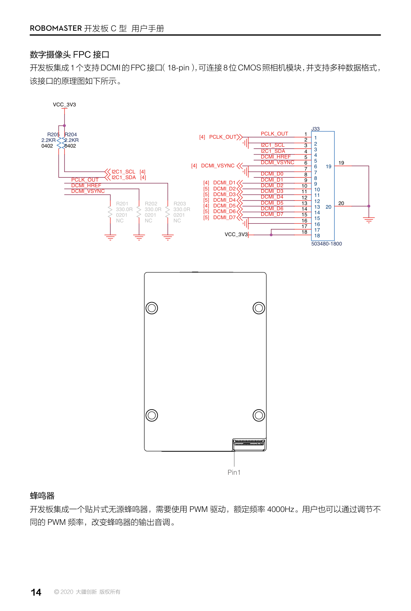
DBUS 接口：与 PWM 共用一个连接器，信号经反相电路接 USART3，100 kbps。
4. 电调与电机（C610 / M2006）
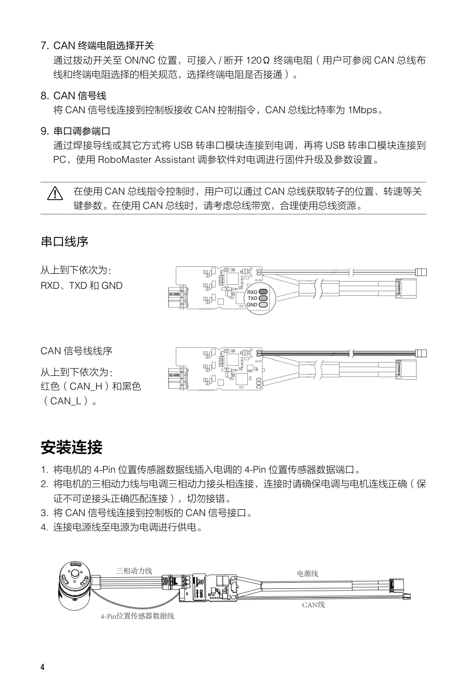
C610 安装连接四步 + 线序：① 电机 4-Pin 位置传感器 → 电调 4-Pin；② 电机三相 ↔ 电调三相（同色、防插反）；③ CAN 线 → 控制板 CAN 口（红 = CAN_H，黑 = CAN_L）；④ 电源线供电。
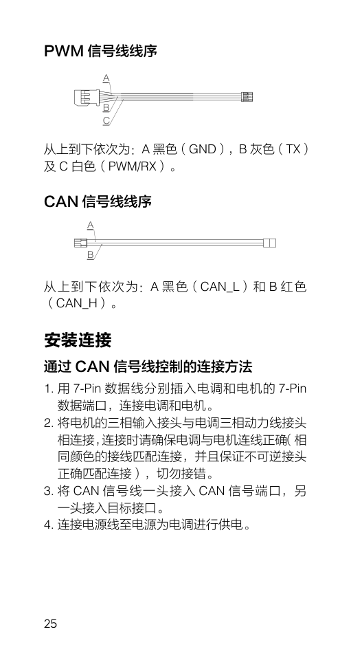
C620 使用说明 · 接线与安装页（配合 M3508 时看这张：7-Pin 数据线、三相线、CAN 线、XT30 电源）。
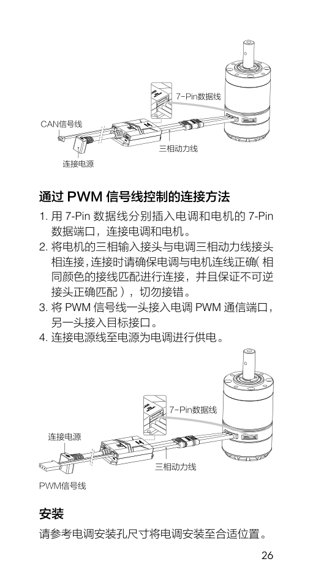
C620 接线补充页：接线顺序与端子位置。
C610 反馈帧（手册 P.9）
| 字节 | 内容 | 说明 |
|---|
| DATA[0..1] | 转子机械角度 | 0 ~ 8191（一圈 360°） |
| DATA[2..3] | 转子转速 | 单位 rpm |
| DATA[4..5] | 实际输出转矩电流 | ±10000（C620 是 ±16384） |
| DATA[6..7] | Null | 没有温度字段 —— 所以屏幕上 T=0 是正常的 |
控制帧：0x200（ID1–4）/ 0x1FF（ID5–8），每帧 8 字节 = 4 个 int16。
反馈帧：0x200 + ID（ID=5 → 0x205）。
代码里 UserMotor = MOTOR_ID_5 → 所以电调要设 ID = 5（绿灯每秒闪 5 次）。
5. 电池与电池架（手册 P.10 / P.13）
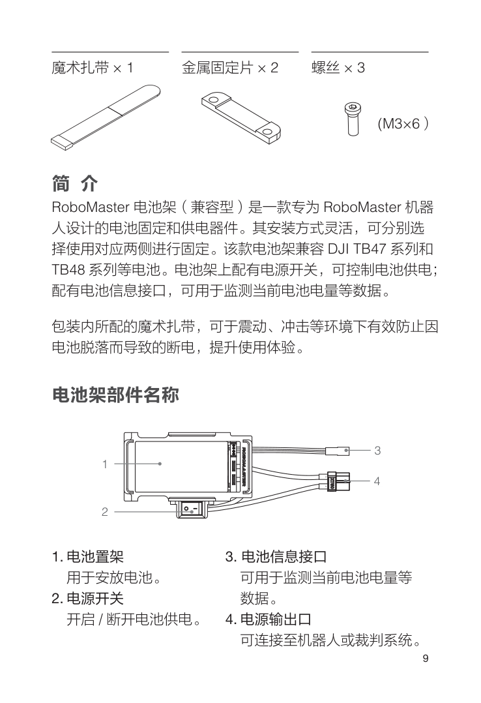
电池架部件：① 置架 ② 电源开关 ③ 电池信息接口 ④ 电源输出口（XT60）。
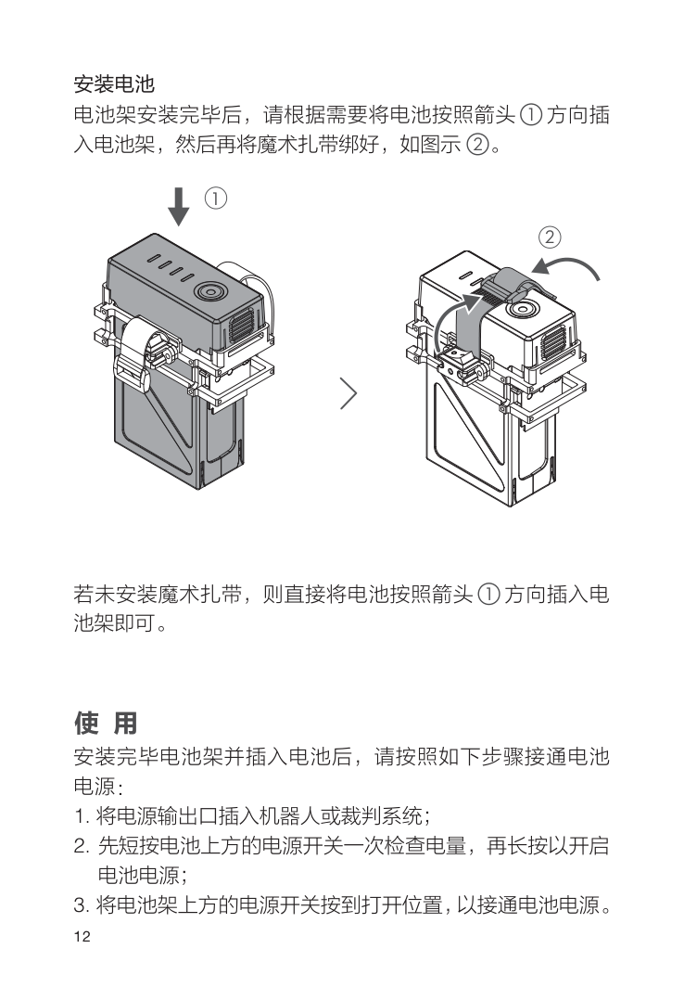
使用三步：插电池 → 短按查电量、长按开机 → 再打开电池架开关。最大持续电流 35 A。
6. 今晚验证过的结论（可直接当基线）
| 项 | 结果 | 依据 |
|---|
| 24 V 供电 | ✅ 正常 | vbat=26；拔掉 USB 后 RGB 灯仍在跑 |
| C610 CAN 回传 | ✅ 正常 | 手转轴 ang −13.12 → −29.98、rpm 出现 −3.05 |
| 电调 ID | ✅ = 5 | 数据出现在 UserMotor 上 |
| DBUS 5 V | ❌ 未送达接收机 | 接收机灯不亮、sL/sR=0；板子 24V 正常 → 指向插头方向/间距 |
7. 下次进实验室按这个顺序（10 分钟）
- 把 C 板 DBUS 那个 3 针插头拔下来，看清它是竖着还是横着插的
- 竖着重插（跨 A/B/C 三排），接收机灯应立刻亮
- 灯亮了 → 对码 → 设 W.BUS + 端口 6 → 通道表 → 看
sL/sR/col
- 还不行 → 用万用表量：① 板子 A↔B 之间有没有 5 V ② 线是否通断（蜂鸣档）③ 接收机 +/− 之间有没有 5 V
一句话记牢：C 板那排 24 针里，A 排全是地、B 排全是 5V、C 排是信号。所以 3 针插头永远是竖着跨三排——横着插只会插到一排地上，没有任何电压。